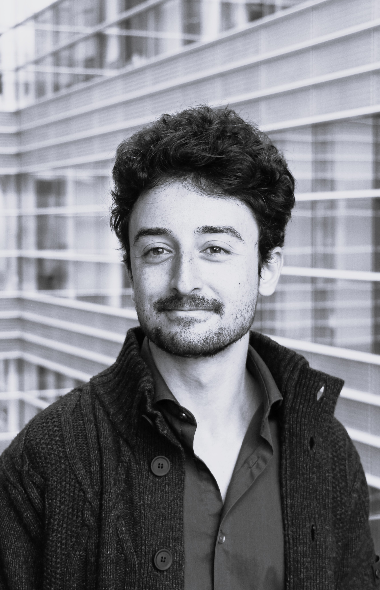

Claudio Costanzo
PhD candidate at European Center for Advanced Research in Economics and Statistics (ECARES), Université libre de Bruxelles. Supervisor: Paula Gobbi
In the Job market in a.y. 2025-2026.
Grantholder at Competence Centre on Behavioural Insights, Joint Research Center.
Research Interests
- Labour and demographic economics
- Behavioural economics
Research
JMP
Automation, import competition, and intra-household labor supply
PDF
Publications
Robots, jobs, and optimal fertility timing
Journal of Population Economics 38, 51
Winner of Kuznets Prize 2026 for best paper in J Popul Econ
Pub version | PDF | DOI
Working papers
AI, risk sharing, and the marriage market
Work in progress
Project: AI, the market for news, and polarization
Teaching
TA Graduate Econometrics II, ULB (2021 – 2025)
Contact
Joint Research Center, Rue du Champ de Mars 21 (Office 04/053), 1050 Bruxelles, Belgium
Email: claudio.costanzo@ulb.be, claudio.costanzo@ec.europa.eu